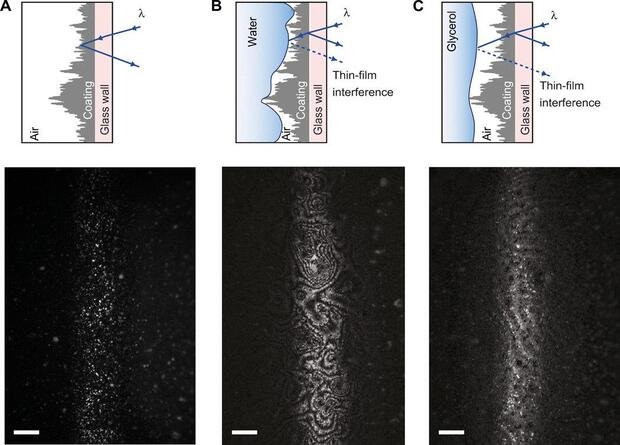

W26 (2026) — English translation
This problem examines the dependence of the viscosity of a mixture of glycerol and water on temperature and their relative concentration. Viscosity is the ability of a liquid to resist flow. The more viscous the liquid, the more difficult it is to pump it through pipes, which means there is a need to use more powerful pumps and stronger pipes designed for higher pressure.
There are several ways to solve equations numerically. The simple iteration method (SI) is one of the simplest methods for numerically solving equations. It is convenient to use it for numerically finding quantities that are given implicitly as a solution to some equation. To solve an equation using the MPI, it must be represented in the form \[x=f(x).\tag{1}\]Substituting the initial approximation $x_0$ as an argument to the function, we obtain the first approximation $x_1$. Further, substituting $x_1$ as an argument to the function, we obtain the second approximation $x_2$, etc. The function $f(x)$ can always be chosen so that the difference between successive approximations decreases, and the result of the calculations becomes closer to the correct answer. To do this, it is necessary that in a sufficiently large neighborhood of the correct answer, the derivative of the function $f(x)$ is less than one in absolute value. If this is not the case, the easiest way is to redefine $f(x)$:\[f(x)\to ax+(1-a)f(x).\] This transformation is invariant under equation $(1)$ and in practice almost always achieves convergence with proper selection of $a\in \mathbb R$. Since the calculator uses the variable $\mathrm{Ans}$ to store the intermediate value, a practical implementation of the MPI is to set $\mathrm{Ans}$ equal to the initial guess and start calculating $f(\mathrm{Ans})$ many times. With the correct selection of the function $f(x)$ the result of the calculations will quickly converge to the correct answer. Another popular method for numerically solving equations is the segment division method. The most common way to do this is to divide the segment in half. The essence of the method is to successively reduce the segment within which the desired solution to the equation lies. To do this, at each iteration this segment is divided into equal parts, the left and right sides of the equation are calculated at the resulting points, and the one on which the difference between the left and right sides changes sign is selected as a new segment. The midpoint of the segment is usually chosen as an estimate for the root. One of the options for the practical implementation of dividing a segment is to use the Table mode, which is supported by some models of calculators. This mode allows you to calculate the values of a given function with equal steps within a given argument range. Typically, the calculator's memory is enough to calculate the function at about 20–25 points, so at each iteration you can effectively divide the segment by about 20 times.
The simple iteration method (SI) is one of the simplest methods for numerically solving equations. It is convenient to use it for numerically finding quantities that are given implicitly as a solution to some equation. To solve an equation using the MPI, it must be represented in the form \[x=f(x).\tag{1}\]Substituting the initial approximation $x_0$ as an argument to the function, we obtain the first approximation $x_1$. Further, substituting $x_1$ as an argument to the function, we obtain the second approximation $x_2$, etc. The function $f(x)$ can always be chosen so that the difference between successive approximations decreases, and the result of the calculations becomes closer to the correct answer. To do this, it is necessary that in a sufficiently large neighborhood of the correct answer, the derivative of the function $f(x)$ is less than one in absolute value. If this is not the case, the easiest way is to redefine $f(x)$:\[f(x)\to ax+(1-a)f(x).\] This transformation is invariant under equation $(1)$ and in practice almost always achieves convergence with proper selection of $a\in \mathbb R$.
Since the calculator uses the variable $\mathrm{Ans}$ to store the intermediate value, a practical implementation of MPI is to set $\mathrm{Ans}$ equal to the initial guess and start calculating $f(\mathrm{Ans})$ many times. With the correct selection of the function $f(x)$, the result of the calculations will quickly converge to the correct answer.
Another popular method for numerically solving equations is the segment division method. The most common way to do this is to divide the segment in half. The essence of the method is to successively reduce the segment within which the desired solution to the equation lies. To do this, at each iteration this segment is divided into equal parts, the left and right sides of the equation are calculated at the resulting points, and the one on which the difference between the left and right sides changes sign is selected as a new segment. The midpoint of the segment is usually chosen as an estimate for the root.
One of the options for the practical implementation of dividing a segment is to use the Table mode, which is supported by some models of calculators. This mode allows you to calculate the values of a given function with equal steps within a given argument range. Typically, the calculator's memory is enough to calculate the function at about 20–25 points, so at each iteration you can effectively divide the segment by about 20 times.
For a mixture of water and glycerol, the dependence of the glass transition temperature on the mass fraction of glycerol $w_g$ can be described with good accuracy by the polynomial: $$T_g(К)=140.3+35.272w_g-3.879w_g^2+ 23.467w_g^3.\tag{2}$$Using this expression and knowing the glass transition temperature, the concentration value can be determined by simple iteration.
Consider the following numerical data known: The density of glycerol at $T=25~^\circ C$ is $\rho_g=1260~kg/м^3$; Density of water $\rho_g=1000~kg/м^3$; Molar mass of glycerol $\mu_g=92~г/моль$; The molar mass of water is $\mu_w=18~г/моль$. In all parts of the problem, you can consider the volume of a mixture to be equal to the sum of the volumes of the components of this mixture.
In all parts of the problem, you can consider the volume of a mixture to be equal to the sum of the volumes of the components of this mixture.
In the general case, it is not possible to solve the problem of the viscosity of a mixture of substances, however, for a mixture of water and glycerin, you can use the empirical formula:
The table shows the experimental dependence of viscosity on the glass transition temperature of a mixture of glycerin and water. The measurements were made at a temperature of $T=25~^\circ \mathrm C$.
$T_g,~К$ $\eta,~Па\cdotс$ 195.2 0.9060 194.8 0.8390 194.6 0.7670 193.9 0.6550 193.1 0.5580 191.8 0.4790 190.8 0.3730 188.6 0.2020 183.4 0.0674 173.0 0.0278 170.0 0.0134 154.6 0.0026 149.3 0.0017 143.8 0.0012 140.3 0.0009
At low temperatures close to the glass transition temperature, it is convenient to use the Vogel-Tammann-Fulcher (VTF) equation: \[\eta = \eta_0 \cdot \exp\left(\frac{DT_0}{T - T_0}\right)\] to describe the dependence of viscosity $\eta$ on temperature $T$, where $\eta_0$ and $T_0$ are constants, $D$ is a constant inversely proportional to the fragility of the substance. The value $D$ is positive for all substances. The table shows the experimental dependence of the mixture viscosity on temperature. Measurements were made with a mixture with a volume fraction of glycerol $c_g=0.5$.
The table shows the experimental dependence of the mixture viscosity on temperature. The measurements were made with a mixture with a volume fraction of glycerol $c_g=0.5$.
$T,~^\circ C$ $\eta,~Па\cdotс$ 1 0.0201 4 0.0173 11 0.0128 15 0.0104 35 0.0046 44 0.0034 50 0.0031 56 0.0026 60 0.0022 67 0.0020 71 0.0017 76 0.00145 85 0.0013 90 0.0011 96 0.0010 100 0.0009
Now accept $\eta_0=3.33\cdot 10^{-6}~{Па\cdot с}.$
In this part of the problem, it is proposed to find the numerical value of the viscosity of the mixture using two previously obtained dependencies. To be able to compare the results obtained, in both cases the mixture is under the same conditions.
In addition to reducing viscosity, fluid flow can be improved by using a superhydrophobic surface. Such surfaces are not wetted by water: the drops on them remain in the form of a ball. An air gap, a plastron, appears between a rough hydrophobic surface of a certain type and the liquid, which reduces the contact area of the two media and facilitates flow. Scientists led by Maja Vuckovac from Aalto University studied the interactions of a rough superhydrophobic surface with thick liquids. The researchers constructed vertical capillaries from a commercially available superhydrophobic material (Hydrobead), closed on one or both sides. These capillaries were filled with liquids of different viscosities, including water, glycerin and polyethylene glycol, which then flowed down under the influence of gravity. As a result, physicists discovered that in this configuration, the flow is faster, the higher the viscosity. To explain the phenomenon, the researchers introduced tracker particles into liquids and began observing flowing droplets at the micro level, including flows within the droplet itself. It turned out that in droplets with low and medium viscosity, an asymmetric circular flow occurs, as if inside the bottle water flowed from the bottom to the neck along one wall and back along the other. The thicker the liquid, the weaker this effect, therefore, if the viscosities are too high, liquids in hydrophilic and hydrophobic capillaries behave the same.
Fig.1. Liquid flow under a microscope

The following experiment used 2 identical cylindrical capillaries, one of which had a smooth surface and the other hydrophobic. A mixture of water and glycerol flows through these capillaries. In the case of a hydrophilic capillary, the dependence of the volumetric flow rate of liquid on viscosity is represented by the equation: \[Q=\dfrac{\pi r^4 \Delta P}{8\eta L},\] where $r$ is the radius of the capillary, $L$ is its length, $\Delta P=\rho gL$ is the pressure difference at the ends of the capillary, $\rho$ is the density of the mixture. All parameters except the viscosity and density of the mixture are maintained constant and identical for both capillaries. You can use the equation relating the viscosity of the mixture and the molar concentration of water obtained in part A, assuming that the temperatures of the mixtures in parts A and D are the same. The density of the mixture is not constant because the concentrations of glycerin in the mixture are different, however, at $\eta > \xi$, consider the density of the mixture to be equal to the density of glycerin $\rho=\rho_g$. The dependences of flow rates in a hydrophobic capillary $v_1(\eta)$ and in a hydrophilic one - $v_2(\eta)$ were obtained. The data obtained is presented in the table below:
where $r$ is the radius of the capillary, $L$ is its length, $\Delta P=\rho gL$ is the pressure difference at the ends of the capillary, $\rho$ is the density of the mixture. All parameters except the viscosity and density of the mixture are maintained constant and identical for both capillaries.
You can use the equation relating the viscosity of the mixture and the molar concentration of water obtained in part A, assuming that the temperatures of the mixtures in parts A and D are the same. The density of the mixture is not constant because the concentrations of glycerol in the mixture are different, however, at $\eta > \xi$, consider the density of the mixture to be equal to the density of glycerol $\rho=\rho_g$.
The dependences of flow rates in a hydrophobic capillary $v_1(\eta)$ and in a hydrophilic one - $v_2(\eta)$ were obtained. The data obtained is presented in the table below:
$\eta,~мПа\cdotс$ $v_1,~мкм/с$ $v_2,~мм/с$ 0.95 42.5 649 1.18 48.6 602 1.32 50.3 545 1.92 80.3 408 2.41 98.0 310 3.95 152 285 5.81 182 253 13.2 243 185 18.4 255 24.8 293 72.3 388 78.0 403 224 510 515 553 989 594 1400 652
You can now restore dependency $v_1(\eta)$. This dependence has several characteristic features at very different (differing by several orders of magnitude) viscosity values, which makes graphical analysis of this dependence difficult.
Source: https://pho.rs/p/4652